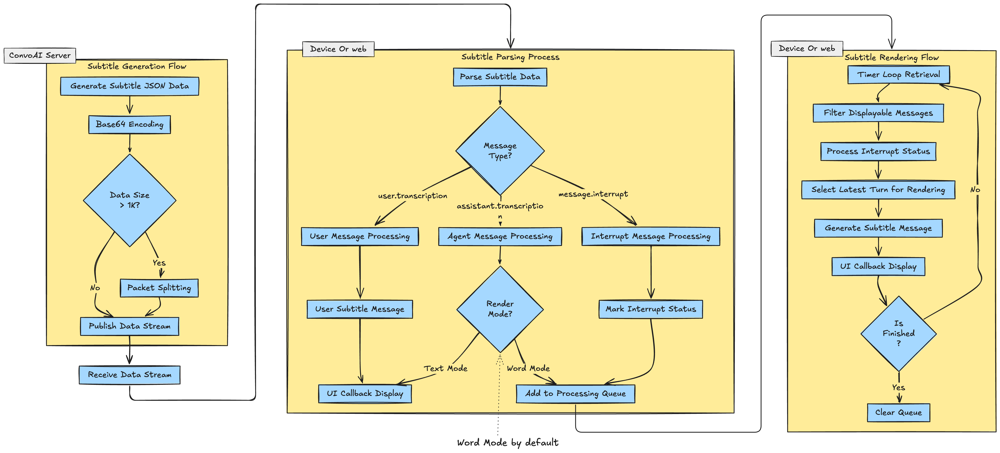

When interacting with conversational agents in real-time, you may need real-time subtitles to display your conversation content with the agent. This article introduces how to implement real-time subtitle functionality in your App. The code logic is demonstrated with Android, but the logic is the same for other platforms - please refer to the relevant SDK APIs based on the logic.
When users and agents interact in an RTC channel, each speech generates corresponding subtitle content and goes through the following process to be rendered on the client side:
